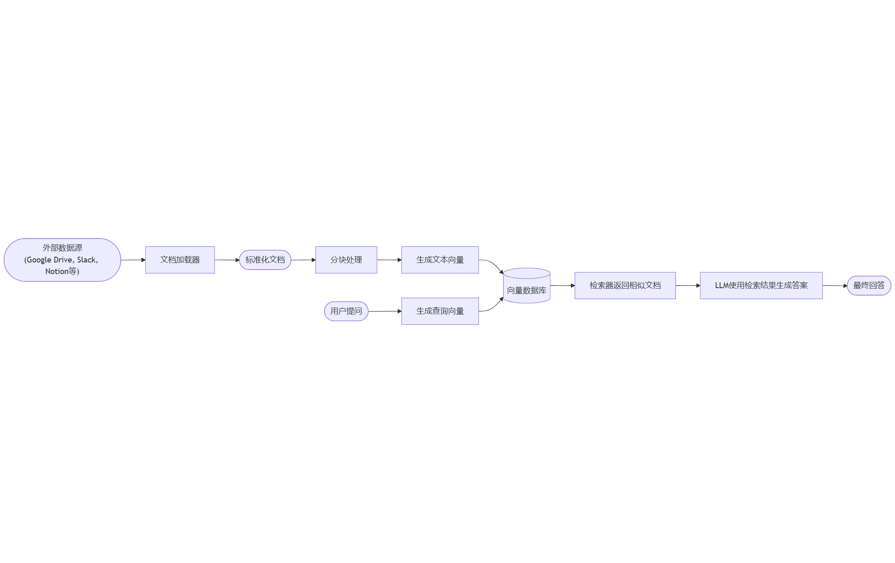
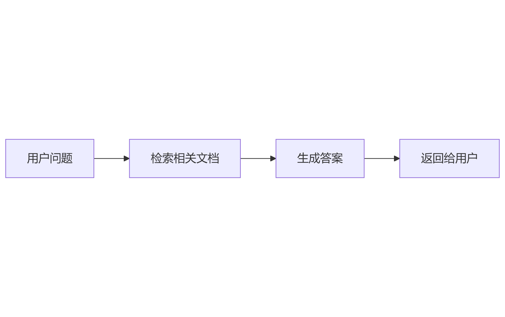
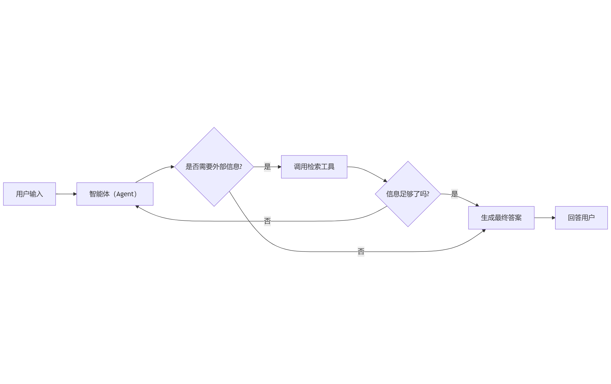
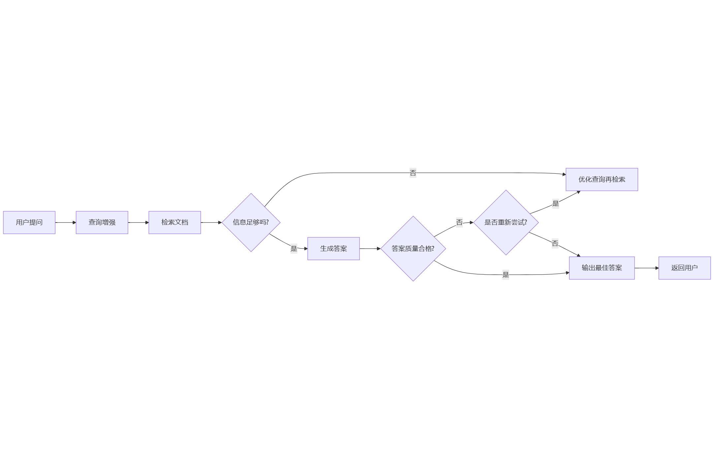

📚 LangChain 检索与 RAG 教程¶
大型语言模型（LLM）虽然强大，但它们天然有两个限制：
- 上下文有限（Finite context） —— 模型一次能“看”的文本有限，无法直接读取整个知识库。
- 知识静态（Static knowledge） —— 模型的训练数据在某个时间点被冻结，无法感知之后的新信息。
检索（Retrieval） 技术正是为了解决这两点，它允许模型在推理过程中实时查询外部知识，从而获取更准确、更实时、更可控的答案。 这是 RAG（Retrieval-Augmented Generation） 的理论基础。
一、从检索到 RAG：思维的转变¶
传统 LLM 是“闭卷考试”——它只能靠训练时学到的知识回答问题。 RAG 则让它“开卷考试”——在回答问题前，先去知识库里查找相关内容。
流程如下：

RAG 的核心理念是：
检索（Retrieve）相关知识 + 生成（Generate）整合性答案 = 可解释且动态的智能系统
二、构建知识库（Knowledge Base）¶
知识库是检索系统的基础，用于存储你希望 LLM 能“查阅”的内容。它可以来源于：
- 内部文档、Wiki、手册
- 数据库（SQL/CRM）
- 文件系统（PDF、Markdown、HTML）
- Web 页面或 API
如果你已经有知识系统（如 CRM、数据库），可以直接将其作为检索工具接入； 否则，就可以用 LangChain 自带的工具从零构建一个。
核心组件¶
| 模块 | 功能 | 示例 |
|---|---|---|
| Document Loaders | 加载外部数据源 | Google Drive、Notion、Slack |
| Text Splitters | 将长文档切成小块 | 按段落或字符数切分 |
| Embedding Models | 把文本转为向量 | OpenAI、Cohere、SentenceTransformers |
| Vector Stores | 存储和搜索向量 | FAISS、Pinecone、Milvus |
| Retrievers | 根据查询向量返回相似内容 | 向量检索、混合检索 |
三、RAG 的三种典型架构¶
RAG 不是单一结构，而是一系列可组合的模式。LangChain 将其分为三种主要形式：
| 架构类型 | 特点 | 控制权 | 灵活度 | 延迟 | 适用场景 |
|---|---|---|---|---|---|
| 2-Step RAG | 固定两步：先检索再生成 | ✅ 高 | ❌ 低 | ⚡ 快 | FAQ、文档问答 |
| Agentic RAG | 智能体自主决定何时检索 | ❌ 低 | ✅ 高 | ⏳ 变化 | 研究助理、多工具系统 |
| Hybrid RAG | 混合结构 + 验证与反馈机制 | ⚖️ 中 | ⚖️ 中 | ⏳ 中 | 高质量问答、领域知识系统 |
四、2-Step RAG：固定流程的高效方案¶
在 2-Step RAG 中，系统总是按照固定顺序运行：
- 检索阶段：根据用户问题，从知识库中找出最相关的内容。
- 生成阶段：将这些内容作为上下文输入给 LLM，让它据此生成答案。

示例（伪代码）：
from langchain.chains import RetrievalQA
from langchain.vectorstores import FAISS
from langchain.embeddings import OpenAIEmbeddings
from langchain.llms import OpenAI
# 1. 构建知识向量库
vectorstore = FAISS.from_texts(
["LangChain 是一个开发框架...", "RAG 用于增强模型..."],
embedding=OpenAIEmbeddings()
)
# 2. 创建检索器
retriever = vectorstore.as_retriever()
# 3. 构建 RAG QA 链
qa = RetrievalQA.from_chain_type(
llm=OpenAI(),
retriever=retriever,
return_source_documents=True
)
# 4. 运行查询
result = qa("LangChain 的作用是什么？")
print(result["result"])
优点：
- 可预测、简单、延迟低；
- 只需一次 LLM 调用；
- 适合问答、文档查询、聊天机器人。
五、Agentic RAG：让智能体自主决定“何时检索”¶
Agentic RAG 是一个带有决策能力的系统。 LLM 不再被动地接收检索结果，而是能推理、判断是否需要检索，甚至选择使用哪个工具来查找信息。

例如，一个研究助理智能体可以判断：
“这个问题涉及实时数据，我需要先去查一下最新网页。”
实现示例：
import requests
from langchain.tools import tool
from langchain.chat_models import init_chat_model
from langchain.agents import create_agent
@tool
def fetch_url(url: str) -> str:
"""从网页抓取文本内容"""
response = requests.get(url, timeout=10)
response.raise_for_status()
return response.text
system_prompt = """\
当需要最新信息时，请使用 fetch_url 工具从网页获取内容。
引用相关片段后回答用户。
"""
agent = create_agent(
model="gpt-4",
tools=[fetch_url],
system_prompt=system_prompt,
)
这种方式让模型具备自主信息搜集能力，可动态应对不确定的任务场景。
六、Hybrid RAG：混合结构与自校正机制¶
Hybrid RAG（混合检索增强生成） 融合了两者的优势： 既有固定流程的稳定性，也能引入智能体的灵活判断。
它通常包括：
- 查询增强：重写用户问题，提高检索相关度。
- 检索验证：评估检索结果是否足够相关。
- 答案验证：检查生成的答案是否与文档一致。
- 循环改进：若不满足条件，自动重试或重新检索。
流程如下：

应用示例：
- 医疗、金融等领域需要结果验证的问答系统；
- 多数据源整合系统；
- 需要多轮自修正的智能助手。
七、RAG 的延迟与性能考量¶
- 2-Step RAG 延迟最可控（一次 LLM 调用即可）。
- Agentic RAG / Hybrid RAG 延迟不固定（取决于决策与检索次数）。
- 真实系统中，网络延迟、数据库响应时间等也会显著影响总耗时。
在部署时，应根据业务优先级选择平衡点：
- 快速响应 → 用 2-Step；
- 智能与灵活 → 用 Agentic；
- 质量与稳定并重 → 用 Hybrid。
八、总结：让模型“知道自己不知道”¶
RAG 代表了从封闭语言模型向知识驱动型智能系统的跃迁。 它让模型在推理时能主动“查阅资料”，在事实层面上更加可靠。
RAG 架构不是终点，而是基础：
- 你可以在其上构建多智能体系统；
- 结合记忆、推理、规划；
- 最终打造具备自我学习与验证能力的智能体。
接下来可以学习如何使用 LangChain 的 RetrievalQA 或 Agentic RAG 框架来实现一个基于你自己知识库的聊天机器人，实现真正的“会查资料的 AI 助理”。